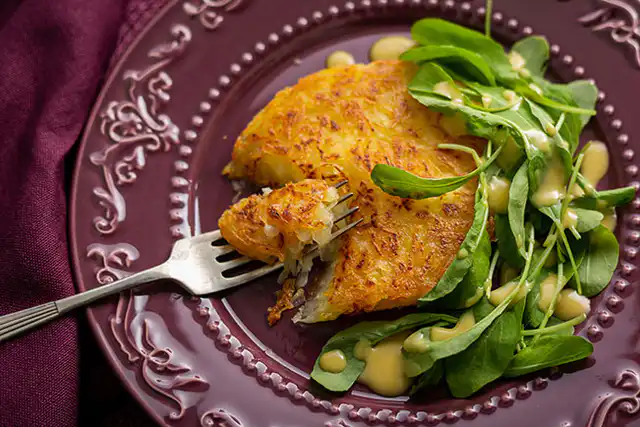

Rápidas e Fáceis


Para quem quer praticidade
Risoto de queijo na pressão com medalhão grelhado

Batata rosti com queijo meia-cura
Peixe com batata e espinafre
Brigadeiro de colher com chocolate amargo